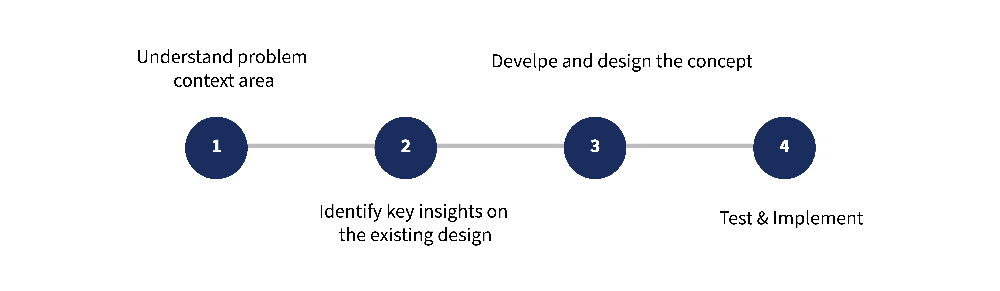

OVER VIEW OF ORCASOUND
Orcasound live listening app is a responsive website design of orca sound website (ORCASOUND.NET) . Orcasound is a website that provides 24/7 access to audio streams of underwater microphones called hydrophones installed in 3 different locations in the Salish Sea. The main purpose of Orcasound is to encourage concerned citizen scientists to take conservation action on behalf of the Southern Resident Killer Whales, which are listed as endangered under the Endangered Species Act.
METHODS
Second Iteraction, Design feature research, come up with new design ideas.
TOOLS
Zoom for communication, Google suite, Figma, pen & paper.
CLIENT
ORCASOUND (Original Website : https://www.orcasound.net/)
TIMELINE
(Aug 2020 - Present).
STATUS
Under developememnt
MY ROLE
We are 7 members of UX Design team working on second iteration process of mobile version of orca sound live listening application. As a part of UX design team I have understood key insights on usability studies report on first interaction of the live listening application to come up with new design ideas to improve the onboard experience of the application. Produce those ideas with 10 members of peoples, includes the stakeholders, UX team leads and remaining our UX design team members to implement those ideas on the application. Participated in usability studies on second iterated application [2/10] to identify user problems while user interacts with the application.
DESIGN PROCESS
DESIGN CHALLENGE
Redesign and improve the mobile interface of the application that helps users easily interact with.
Use the remaining color palette from the branding to improve the interface look and feel.
Realign the elements from the existing design to improve more accessibility of the design.
SOLUTION
Design responsive website of orcasound
OUTCOMES
Using responsive website, optimized browsing experience
By live listening orcas Increase the reporting sounds of orcas to conserve them.
Improve the onboarding experience